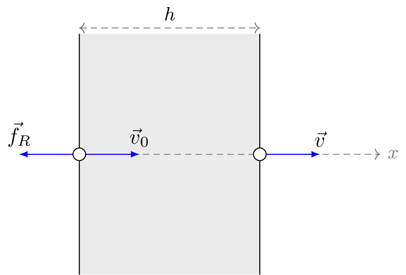

pre.tex
\documentclass[tikz]{standalone}\input{pre.tex}\begin{document}\begin{tikzpicture}[
force/.style={>=latex,draw=blue,fill=blue},
% axis/.style={densely dashed,gray,font=\small},
axis/.style={densely dashed,black!60,font=\small},
M/.style={rectangle,draw,fill=lightgray,minimum size=0.5cm,thin},
m2/.style={draw=black!30, rectangle,draw,thin, fill=blue!2, minimum width=0.7cm,minimum height=0.7cm},
m1/.style={draw=black!30, rectangle,draw,thin, fill=blue!2, minimum width=0.7cm,minimum height=0.7cm},
plane/.style={draw=black!30, very thick, fill=blue!5, line width=1pt},
% base/.style={draw=black!70, very thick, fill=blue!4, line width=2pt},
string/.style={draw=black, thick},
pulley/.style={thick},
% interface/.style={draw=gray!60,
% % The border decoration is a path replacing decorator.
% % For the interface style we want to draw the original path.
% % The postaction option is therefore used to ensure that the
% % border decoration is drawn *after* the original path.
% postaction={draw=gray!60,decorate,decoration={border,angle=-135,
% amplitude=0.3cm,segment length=2mm}}},
interface/.style={
pattern = north east lines,
draw = none,
pattern color=gray!60,
},
plank/.style={
fill=black!60,
draw=black,
minimum width=3cm,
inner ysep=0.1cm,
outer sep=0pt,
yshift=0.75cm,
pattern = north east lines,
pattern color=gray!60,
},
cargo/.style={
rectangle,
fill=black!70,
inner sep=2.5mm,
}
]
\draw[draw=none, fill=black!10] (0,-2) rectangle (3,2);
\draw[thin] (0,-2) -- (0,2);
\draw[thin] (3,-2) -- (3,2);
\draw[axis,<->] (0,2.1) -- node[above, black] {$h$} (3,2.1);
\draw[axis,->] (0,0) -- ++(5,0) node [right] {$x$};
\draw[force,->] (0,0) -- ++(1,0) node[above] {$\vec{v}_0$};
\draw[force,->] (0,0) -- ++(-1,0) node[above] {$\vec{f}_R$};
% \draw[fill=white] (0,0) ++(-0.2,0.2) rectangle ++(0.4,-0.4);
\draw[fill=white] (0,0) circle (3pt);
\draw[force,->] (3,0) -- ++(1,0) node[above] {$\vec{v}$};
\draw[fill=white] (3,0) circle (3pt);
\end{tikzpicture}\end{document}